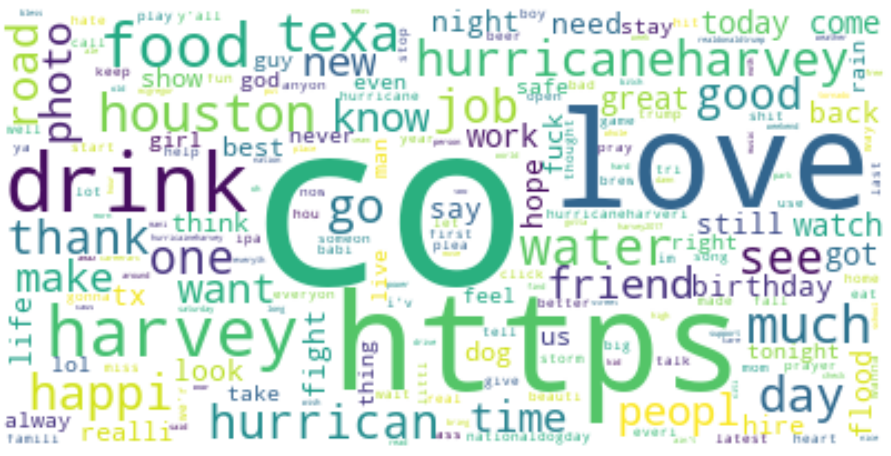
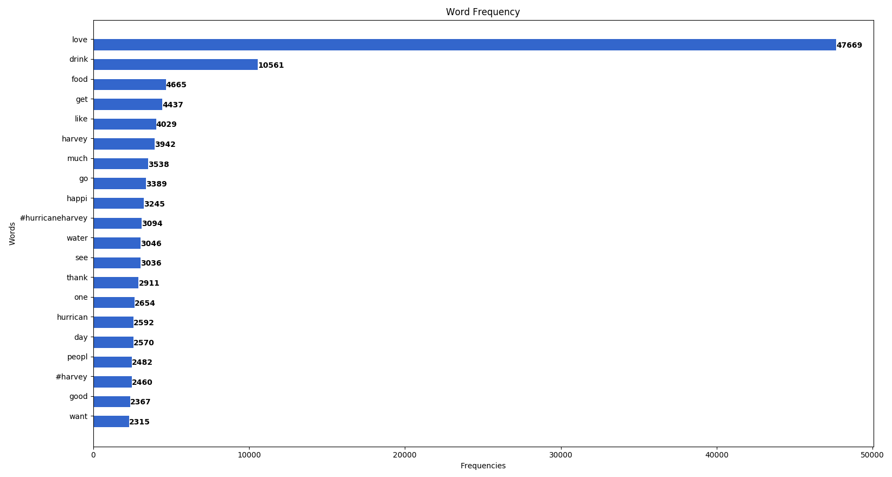
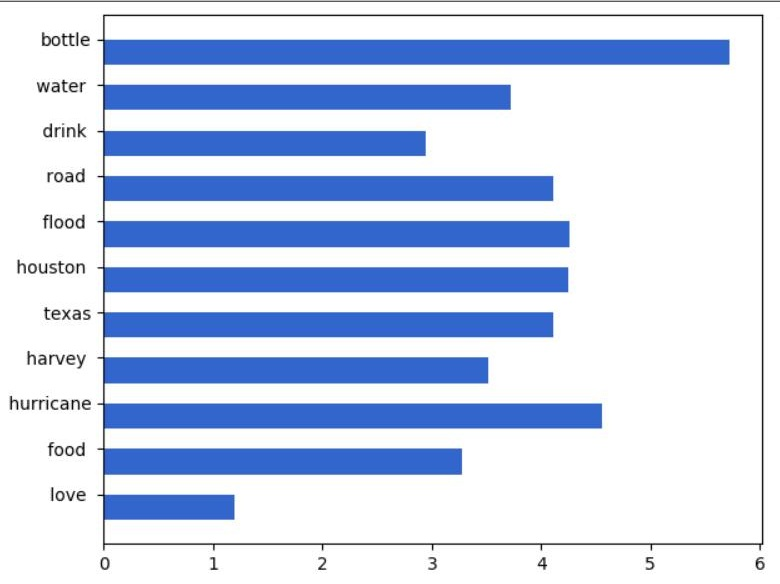
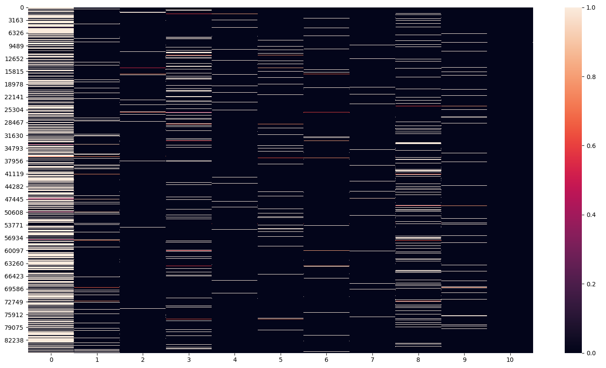
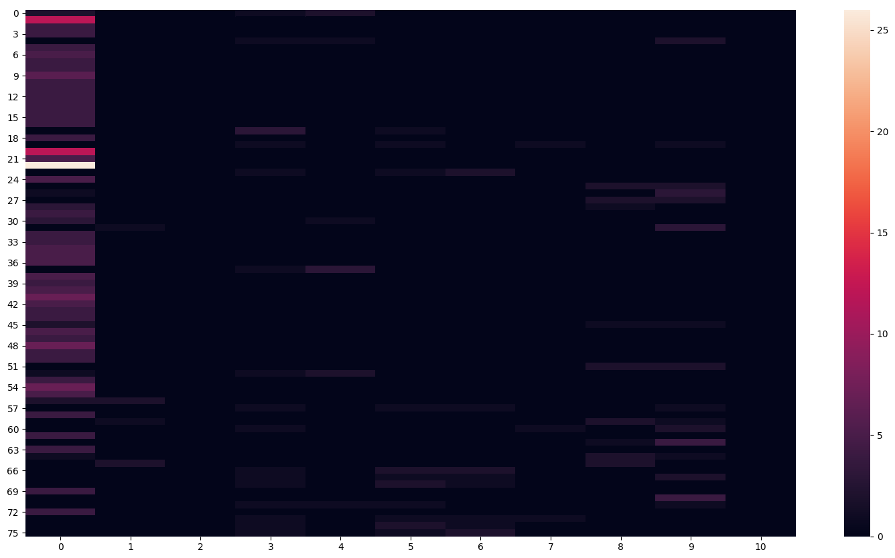
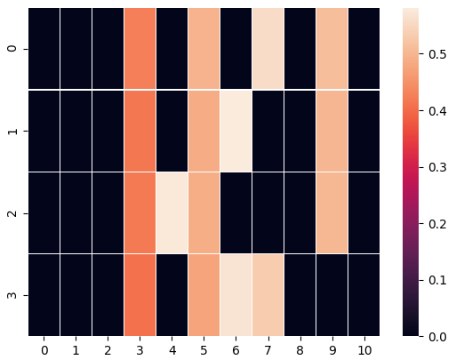
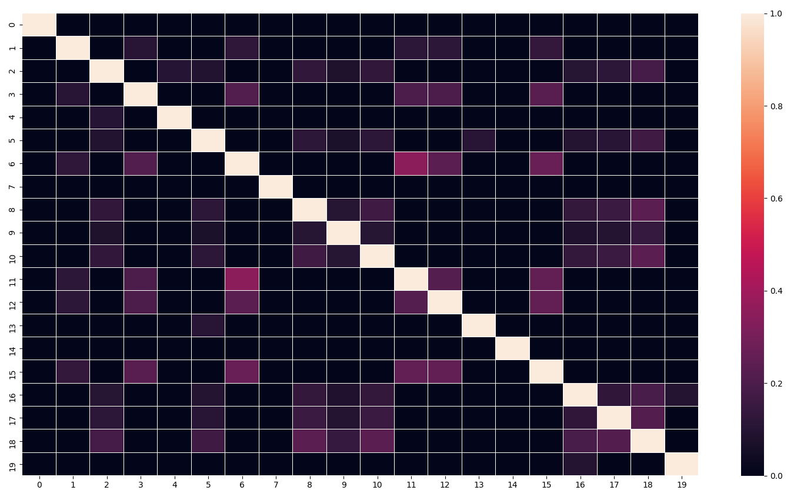

Instructor: Dr. Fang Jin
Long Nguyen, PhD. Student, Data Discovery Lab
Sisheng Liang, PhD. Student, Data Discovery Lab
Tweets from Aug 26, 2017 to Aug 30, 2017 (while Hurricane Harvey was occurring)
|  |
|  |
|  |
|  |
|  |
|  |
@hctra east sam houston tollway: northbound servic road spencer block high water #harvey https://t.co/pde4gj7b60
flash flood emerg effect part western houston. water rescu progress... #harvey https://t.co/ilqcavcbyn
harvey get hell texas!! bad lightn houston water. caus enough chaos! https://t.co/0xzfwrltml
#break south freeway holli hall road houston flood harvey rains. listen local leaders. stay roads. #abc13
|  |